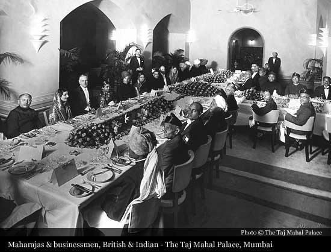
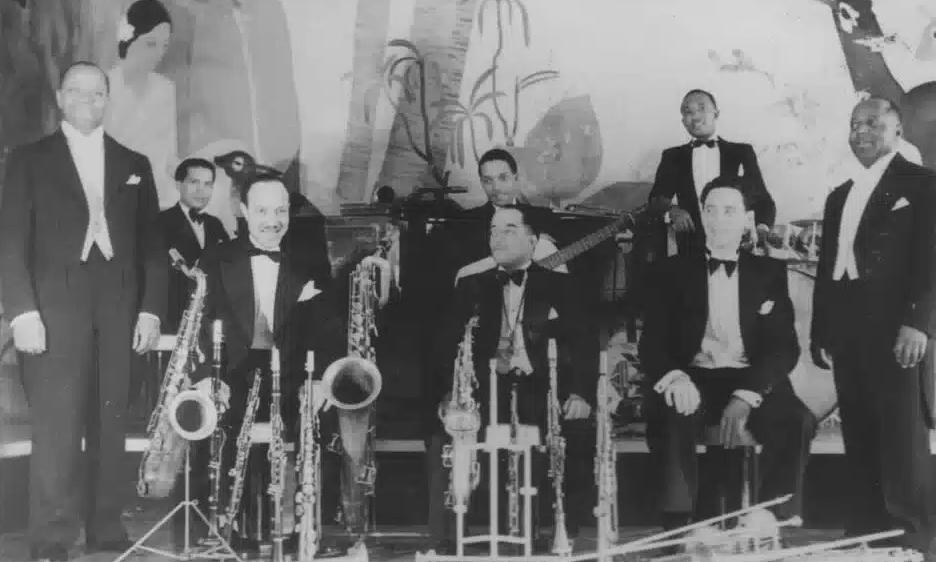
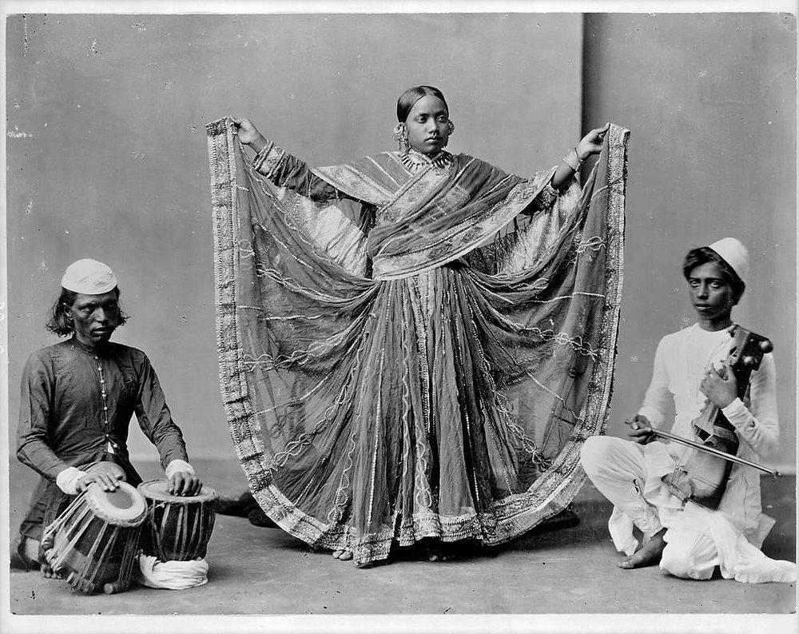
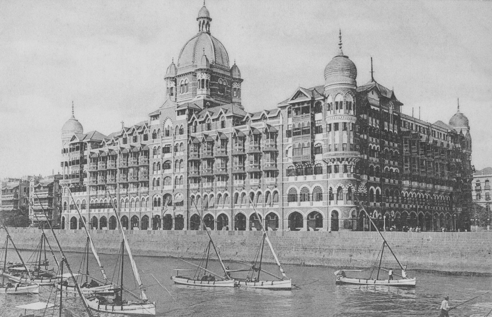
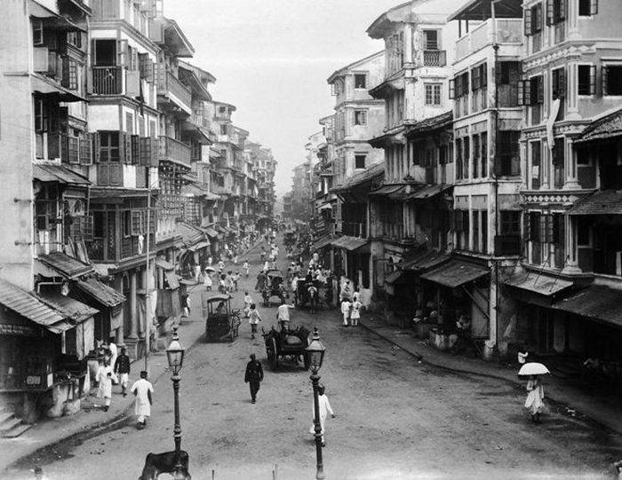

Bombay, late 1920s — the hotel band and the other room
The band is already playing when you step in.
Not loudly—nothing here is loud—but precisely, as if the room requires it.
The ballroom of the Taj Mahal Palace Hotel is arranged for distance:
polished floor
small tables
a clear separation between musicians and guests
Ceiling fans turn slowly overhead. The air moves, but only just.
The sound
It’s jazz—but disciplined.
You hear the structure from New York City:
syncopation
brass accents
danceable rhythm
But it’s been refined, narrowed.
The musicians—often Parsi bands—play cleanly, without excess. No stretching, no rough edges.
This is jazz that behaves.
The room
At the tables:
British officers and administrators
Indian elites—lawyers, industrialists
a few visitors moving between both
Dress signals everything:
tuxedos, evening gowns
carefully chosen hybrids—Western suits with Indian textiles
No one is unsure where they belong.
Or if they are, they don’t show it.
The dancing
Couples move onto the floor.
Foxtrot. Waltz. Something like a Charleston, but softened.
Movement is correct, measured.
No one pushes past the structure.
You realize:
This is not a place to discover something new.It’s a place to demonstrate that you already understand it.
The other room (not here)
You hear about it before you see it.
Another space—elsewhere in the city.
Not this polished ballroom, but smaller, closer, less arranged.
Dance there doesn’t follow European timing.
It follows:
rhythm cycles
gesture
expression built over time
Forms that will later be named, formalized, revived:
what was once called sadir
what will become Bharatanatyam
Not for this audience.
Not for this room.
The split
You feel it without crossing it.
Two systems:
one aligned with empire, export, recognition
one rooted, changing, but not yet re-presented
They exist at the same time.
They do not meet here.
The music shifts
The band transitions—smoothly, professionally.
No rupture. No surprise.
Everything continues as expected.
What you notice
Unlike Berlin, there is no open challenge.
Unlike Harlem, no visible contradiction.
Everything is arranged to appear coherent.
And that coherence is the point.
The underlying reality
But you can feel it:
What is being performed here is not culture—it is alignment.
With power. With taste. With recognition.
The line to carry
As you step back into the night—motorcars passing, the city extending beyond the hotel—you understand:
The music moves easily through this room.But the culture it comes from does not.